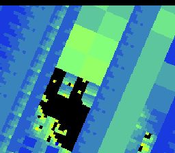
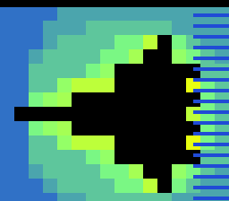
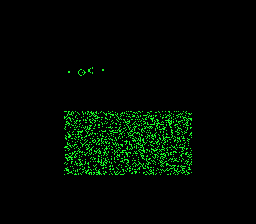

Mandelbrot object-oriented
Google TV · launcher views · implementation plan
Two ways to find the next ROM.
Keep Quick Launch as the fast, information-dense home. Add Cartridge Flow as a visual browsing surface. One shared catalog and one D-pad view carousel let the user choose the launcher style without splitting search, selection, or playback state.
View 1 · Quick Launch View 2 · Cartridge Flow01 · Quick Launch
The current launcher remains the list-first view. Add the two-card launcher carousel to its header so a remote user can switch views at any time. Selected ROM, category, and query carry across.
1920 × 1080 Google TV composition · selected row and launcher view are both explicit← → launcher view · ↑ ↓ ROM list
Choose a ROM
38 matches · 152 ROMsALL · 152★ FAVORITES · 4FRACTALS · 18CLASSICS · 12VIDEO · 7
 Mode 7 MandelbrotFractals · 32 KB · Mode 7
Mode 7 MandelbrotFractals · 32 KB · Mode 7
Mandelbrot object-orientedFractals · 32 KB
Mandelbrot floating pointFractals · 32 KB
Conway’s Game of LifeCellular Automata · 64 KBNewton’s FractalFractals · 32 KB
D-PAD BROWSE · SELECT PLAY · HOLD SELECT FAVORITE152 ROMs · OFFLINE
02 · Cartridge Flow
The active game image becomes the cartridge cover. Previous and next matches stay visible as context; the center cover owns the screen and the Play action. Search and category chips still jump directly into large catalogs.
Same device viewport · stage scales from catalog screenshots without cropping their 4:3 image area← → select cartridge · OK Play
Mode 7 Mandelbrot
Mandelbrot floating point
‹›
○ ○ ● ○ ○ ○ ○ 38 MATCHES
← → BROWSE CARTRIDGES · ↑ FILTERS · SELECT PLAY1 OF 38 · WRAPS AT BOTH ENDS
How the launcher carousel and ROM carousel relate
There are two independent carousels: the top-level view chooser switches UI, while Cartridge Flow’s stage changes ROM selection. Both operate on shared catalog state; only Play invokes the existing ROM loader.
View carousel
- Focus a named launcher card.
- Left/right changes focused view; Select activates.
- Active view is persisted as
launcherView.
Cartridge carousel
- Left/right changes ROM within filtered matches, wrapping at ends.
- Up returns to filters; down moves into actions.
- Neighbors are context only; search can jump anywhere.
Shared state
- One query, category, favorite set, and selected ROM.
- View switching changes presentation only.
- Both Play buttons invoke the existing tested launch path.
Behavior and edge cases
| State | Cartridge Flow behavior | Reason |
|---|---|---|
| One match | One centered cover; no fake neighbors or misleading dots. | Keep focus and position understandable. |
| No matches | Retain clear query / search all actions. | Every search has an escape path. |
| Filter or query changes | Select first match, update center and adjacent cards. | Never leave stale artwork or invalid focus. |
| Switch launcher view | Keep ROM, category, and query; do not play. | Presentation changes are reversible. |
| Restart app | Restore the selected launcher and last-played focus. | Preferences remain device-local. |
| Catalog gains new views | Render registered view cards from a shared registry. | Avoid hard-coded two-view navigation. |
Size and performance: both surfaces use existing catalog records and screenshot cards. Cartridge Flow renders at most three covers at a time, reusing image paths and launch code; ROM files and their generated assets do not change.